전산응용기계제도기능사 (2015-04-04 기출문제)
1과목: 기계재료 및 요소
1. 열처리 방법 및 목적으로 틀린 것은?
- 불림 - 소재를 일정온도에 가열 후 공냉시킨다.
- 풀림 - 재질을 단단하고 균일하게 한다.
- 담금질 - 급냉시켜 재질을 경화시킨다.
- 뜨임 - 담금질된 것에 인성을 부여한다.
(정답률: 66%)
2. 특수강에 포함되는 특수원소의 주요 역할 중 틀린 것은?
- 변태속도의 변화
- 기계적, 물리적 성질의 개선
- 소성 가공성의 개량
- 탈산, 탈황의 방지
(정답률: 53%)

3. 금속의 결정구조에서 체심입방격자의 금속으로만 이루어진 것은?
- Au, Pb, Ni
- Zn, Ti, Mg
- Sb, Ag, Sn
- Na, V, Mo
(정답률: 50%)
4. 황동의 합금 원소는 무엇인가?
- Cu - Sn
- Cu - Zn
- Cu - Al
- Cu - Ni
(정답률: 76%)
5. 초경합금에 대한 설명 중 틀린 것은?
- 경도가 HRC 50 이하로 낮다.
- 고온경도 및 강도가 양호하다.
- 내마모성과 압축강도가 높다.
- 사용목적, 용도에 따라 재질의 종류가 다양하다.
(정답률: 73%)
6. 다이캐스팅용 알루미늄(Al)합금이 갖추어야 할 성질로 틀린 것은?
- 유동성이 좋을 것
- 열간취성이 적을 것
- 금형에 대한 점착성이 좋을 것
- 응고수축에 대한 용탕 보급성이 좋을 것
(정답률: 68%)
7. 경질이고 내열성이 있는 열경화성 수지로서 전기기구, 기어 및 프로펠러 등에 사용되는 것은?
- 아크릴수지
- 페놀수지
- 스티렌수지
- 폴리에틸렌
(정답률: 63%)
8. 길이 100㎝의 봉이 압축력을 받고 3mm만큼 줄어들었다. 이때, 압축 변형률은 얼마인가?
- 0.001
- 0.003
- 0.0⑤
- 0.007
(정답률: 87%)
9. 각속도(ω, rad/s)를 구하는 식 중 옳은 것은? (단, N:회전수(rpm), H:전달마력(PS)이다.)
- ω=(2πN)/60
- ω=60/(2πN)
- ω=(2πN)/(60H)
- ω=(60H)/(2πN)
(정답률: 50%)
10. 국제단위계(SI)의 기본단위에 해당되지 않는 것은?
- 길이 : m
- 질량 : kg
- 광도 : mol
- 열역학 온도 : K
(정답률: 66%)
2과목: 기계가공법 및 안전관리
11. 물체의 일정 부분에 걸쳐 균일하게 분포하여 작용하는 하중은?
- 집중하중
- 분포하중
- 반복하중
- 교번하중
(정답률: 81%)
12. 볼나사의 단점이 아닌 것은?
- 자동체결이 곤란하다.
- 피치를 작게 하는데 한계가 있다.
- 너트의 크기가 크다.
- 나사의 효율이 떨어진다.
(정답률: 64%)
13. 외접하고 있는 원통마찰차의 지름이 각각 240mm, 360mm일 때, 마찰차의 중심거리는 얼마인가?
- 60mm
- 300mm
- 400mm
- 600mm
(정답률: 74%)
14. 축을 설계할 때 고려하지 않아도 되는 것은?
- 축의 강도
- 피로 충격
- 응력 집중의 영향
- 축의 표면조도
(정답률: 67%)
15. 가장 널리 쓰이는 키(key)로 축과 보스 양쪽에 키 홈을 파서 동력을 전달하는 것은?
- 성크 키
- 반달 키
- 접선 키
- 원뿔 키
(정답률: 69%)
16. 절삭 공구재료 중에서 가장 경도가 높은 재질은?
- 고속도강
- 세라믹
- 스텔라이트
- 입방정 질화붕소
(정답률: 45%)
17. 선반에서 단동척에 대한 설명으로 틀린 것은?
- 연동척보다 강력하게 고정한다.
- 무거운 공작물이나 중절삭을 할 수 있다.
- 불규칙한 공작물의 고정이 가능하다.
- 3개의 조가 있으므로 원통형 공작물 고정이 쉽다.
(정답률: 69%)
18. 기어절삭에 사용되는 공구가 아닌 것은?
- 랙(rack) 커터
- 호브
- 피니언 커터
- 브로치
(정답률: 59%)
19. 지름 30mm인 환봉을 318rpm으로 선반가공 할 때, 절삭속도는 약 몇 m/min인가?
- 30
- 40
- 50
- 60
(정답률: 56%)
20. 밀링에서 테이블의 좌우 및 전후이송을 사용한 윤곽가공과 간단한 분할작업도 가능한 부속장치는?
- 슬로팅 장치
- 분할대
- 유압 밀링 바이스
- 회전 테이블 장치
(정답률: 42%)
21. 보통 보링머신을 분류한 것으로 틀린 것은?
- 테이블형
- 플레이너형
- 플로우형
- 코어형
(정답률: 51%)
22. 공작물, 미디어(media), 공작액, 콤파운드를 상자 속에 넣고 회전 또는 진동시키면 공작물과 연삭입자가 충돌하여 공작물 표면에 요철을 없애고 매끈한 다듬질 면을 얻는 가공방법은?
- 브로칭
- 배럴가공
- 숏피닝
- 래핑
(정답률: 47%)
23. 선반 바이트 팁을 사용 중에 절삭날이 무디어지면 날 부분을 새것으로 교환하여 날을 순차로 사용하는 것은?
- 클램프 바이트
- 단체 바이트
- 경납땜 바이트
- 용접 바이트
(정답률: 69%)
24. 센터리스 연삭에서 조정숫돌의 역할로 옳은 것은?
- 연삭숫돌의 이송과 회전
- 일감의 고정기능
- 일감의 탈착기능
- 일감의 회전과 이송
(정답률: 53%)
25. 다수의 절삭날을 직열로 나열된 공구를 가지고 1회 행정으로 공작물의 구멍 내면 혹은 외측표면을 가공하는 절삭방법은?
- 호닝
- 래핑
- 브로칭
- 액체 호닝
(정답률: 62%)
3과목: 기계제도
26. 다음 중 치수기입 원칙에 어긋나는 것은?
- 중복된 치수 기입을 피한다.
- 관련되는 치수는 되도록 한곳에 모아서 기입한다.
- 치수는 되도록 공정마다 배열을 분리하여 기입한다.
- 치수는 각 투상도에 고르게 분배 되도록 한다.
(정답률: 69%)
27. 투상도 표시방법 설명으로 잘못된 것은?
- 부분 투상도 - 대상물의 구멍, 홈 등과 같이 한 부분의 모양을 도시하는 것으로 충분한 경우에는 그 필요한 부분만을 도시한다.
- 보조 투상도 - 경사부가 있는 물체는 그 경사면의 보이는 부분의 실제모양을 전체 또는 일부분을 나타낸다.
- 회전 투상도 - 대상물의 일부분을 회전해서 실제 모양을 나타낸다.
- 부분 확대도 - 특정한 부분의 도형이 작아서 그 부분을 자세하게 나타낼 수 없거나 치수 기입을 할 수 없을 때에는 그 해당 부분을 확대하여 나타낸다.
(정답률: 54%)
28. 다음 중 도면 제작에서 원의 지시선 긋기 방법으로 맞는 것은?
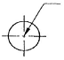
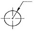
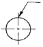
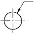
(정답률: 62%)
29. 다음은 어느 단면도에 대한 설명인가?
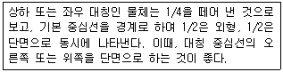
- 한쪽 단면도
- 부분 단면도
- 회전도시 단면도
- 온 단면도
(정답률: 73%)
30. 다음 중 억지 끼워맞춤인 것은?
- 구멍 - H7, 축 - g6
- 구멍 - H7, 축 - f6
- 구멍 - H7, 축 - p6
- 구멍 - H7, 축 - e6
(정답률: 75%)
31. 다음 중 2종류 이상의 선이 같은 장소에서 중복될 경우 가장 우선되는 선의 종류는?
- 중심선
- 절단선
- 치수 보조선
- 무게 중심선
(정답률: 72%)
32. 다음과 같이 지시된 기하 공차의 해석이 맞는 것은?
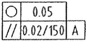
- 원통도 공차값 0.⑤mm, 축선은 데이텀, 축직선 A에 직각이고 지정길이 150mm, 평행도 공차값 0.02mm
- 진원도 공차값 0.⑤mm, 축선은 데이텀, 축직선 A에 직각이고 전체길이 150mm, 평행도 공차값 0.02mm
- 진원도 공차값 0.⑤mm, 축선은 데이텀, 축직선 A에 평행하고 지정길이 150mm, 평행도 공차값 0.02mm
- 원통의 윤곽도 공차값 0.⑤mm, 축선은 데이텀, 축직선 A에 평행하고 전체길이 150mm, 평행도 공차값 0.02mm
(정답률: 76%)
33. 다음 중 줄무늬 방향의 기호 설명 중 잘못된 것은?
- X : 가공에 의한 커터의 줄무늬 방향의 기호를 기입한 투상면에 경사지고 두 방향으로 교차
- M : 가공에 의한 커터의 줄무늬 방향의 기호를 기입한 투상면에 평행
- C : 가공에 의한 커터의 줄무늬 방향의 기호를 기입한 면의 중심에 대하여 대략 동심원 모양
- R : 가공에 의한 커터의 줄무늬 방향의 기호를 기입한 면의 중심에 대하여 대략 레이디얼 모양
(정답률: 79%)
34. 다음 중 가장 고운 다듬면을 나타내는 것은?
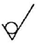
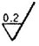
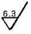
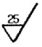
(정답률: 77%)
35. 다음 중 3각 투상법에 대한 설명으로 맞는 것은?
- 눈→투상면→물체
- 눈→물체→투상면
- 투상면→물체→눈
- 물체→눈→투상면
(정답률: 77%)
36. 특수한 가공을 하는 부분 등, 특별히 요구사항을 적용할 수 있는 범위를 표시하는데 사용하는 선은?
- 가는 1점 쇄선
- 가는 2점 쇄선
- 굵은 1점 쇄선
- 아주 굵은 실선
(정답률: 67%)
37. 다음 중 인접 부분을 참고로 나타내는데 사용하는 선은?
- 가는 실선
- 굵은 1점 쇄선
- 가는 2점 쇄선
- 가는 1점 쇄선
(정답률: 51%)
38. 재료기호 표시의 중간부분 기호 문자와 제품명이다. 연결이 틀리게 된 것은?
- P : 관
- W : 선
- F : 단조품
- S : 일반 구조용 압연재
(정답률: 41%)
39. ø35h6에서 위치수 허용차가 0일 때, 최대 허용 한계 치수 값은? (단, 공차는 0.016이다.)
- ø34.084
- ø35.000
- ø35.016
- ø35.084
(정답률: 53%)
40. 정투상 방법에 따라 평면도와 우측면도가 다음과 같다면 정면도에 해당하는 것은?
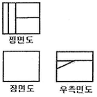
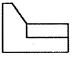
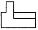
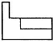
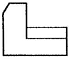
(정답률: 62%)
41. 공차 기호에 의한 끼워맞춤의 기입이 잘못된 것은?
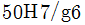
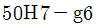
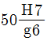
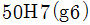
(정답률: 55%)
42. KS의 부문별 분류 기호로 맞지 않는 것은?
- KS A : 기본
- KS B : 기계
- KS C : 전기
- KS D : 전자
(정답률: 83%)
43. 기하공차의 종류를 나타낸 것 중 틀린 것은?
- 진직도(―)
- 진원도(○)
- 평면도(□)
- 원주 흔들림(↗)
(정답률: 67%)
44. 도면에서 A3 제도 용지의 크기는?
- 841 × 1189
- 594 × 841
- 420 × 594
- 297 × 420
(정답률: 67%)
45. 다음의 투상도의 좌측면도에 해당하는 것은? (단, 제3각 투상법으로 표현한다.)
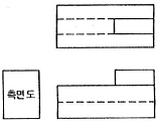
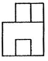
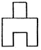
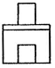
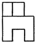
(정답률: 83%)
46. 다음 그림이 나타내는 코일 스프링 간략도의 종류로 알맞은 것은?
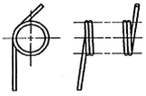
- 벌류트 코일 스프링
- 압축 코일 스프링
- 비틀림 코일 스프링
- 인장 코일 스프링
(정답률: 59%)
47. 베어링의 호칭이 “6026”일 때 안지름은 몇 mm인가?
- 26
- 52
- 100
- 130
(정답률: 83%)
48. 스퍼기어의 요목표에서 잇수는?
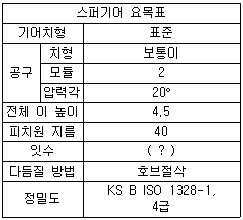
- 5
- 10
- 15
- 20
(정답률: 79%)
49. 용접 지시기호가 나타내는 용접부위의 형상으로 가장 옳은 것은?
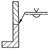
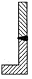
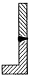
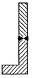
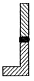
(정답률: 58%)
50. 평행키의 호칭 표기 방법으로 맞는 것은?
- KS B 1311 평행키 10×8×25
- KS B 1311 10×8×25 평행키
- 평행키 10×8×25 양 끝 둥금 KS B 1311
- 평행키 10×8×25 KS B 1311 양 끝 둥금
(정답률: 58%)
51. V 벨트의 형별 중 단면의 폭 치수가 가장 큰 것은?
- A형
- D형
- E형
- M형
(정답률: 63%)
52. 나사면에 증기, 기름 또는 외부로부터의 먼지 등이 유입되는 것을 방지하기 위해 사용하는 너트는?
- 나비 너트
- 둥근 너트
- 사각 너트
- 캡 너트
(정답률: 73%)
53. 기어제도 시 잇봉우리원에 사용하는 선의 종류는?
- 가는 실선
- 굵은 실선
- 가는 1점 쇄선
- 가는 2점 쇄선
(정답률: 61%)
54. 운전 중 또는 정지 중에 운동을 전달하거나 차단하기에 적절한 축이음은?
- 외접기어
- 클러치
- 올덤 커플링
- 유니버설 조인트
(정답률: 73%)
55. 관이음 기호 중 유니언 나사이음 기호는?
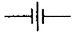
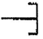
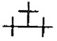
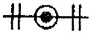
(정답률: 79%)
56. “왼 2줄 M50×2 6H"로 표시된 나사의 설명으로 틀린 것은?
- 왼 : 나사산의 감는 방향
- 2줄 : 나사산의 줄 수
- M50×2 : 나사의 호칭지름 및 피치
- 6H : 수나사의 등급
(정답률: 67%)
57. 중앙처리장치(CPU)의 구성 요소가 아닌 것은?
- 주기억장치
- 파일저장장치
- 논리연산장치
- 제어장치
(정답률: 72%)
58. 디스플레이상의 도형을 입력장치와 연동시켜 움직일 때, 도형이 움직이는 상태를 무엇이라고 하는가?
- 드래깅(dragging)
- 트리밍(trimming)
- 쉐이딩(shading)
- 주밍(zooming)
(정답률: 68%)
59. 다음 중 와이어 프레임 모델링(wireframe modeling)의 특징은?
- 단면도 작성이 불가능하다.
- 은선 제거가 가능하다.
- 처리속도가 느리다.
- 물리적 성질의 계산이 가능하다.
(정답률: 44%)
60. 다음 시스템 중 출력장치로 틀린 것은?
- 디지타이저(digitizer)
- 플로터(plotter)
- 프린터(printer)
- 하드 카피(hard copy)
(정답률: 66%)